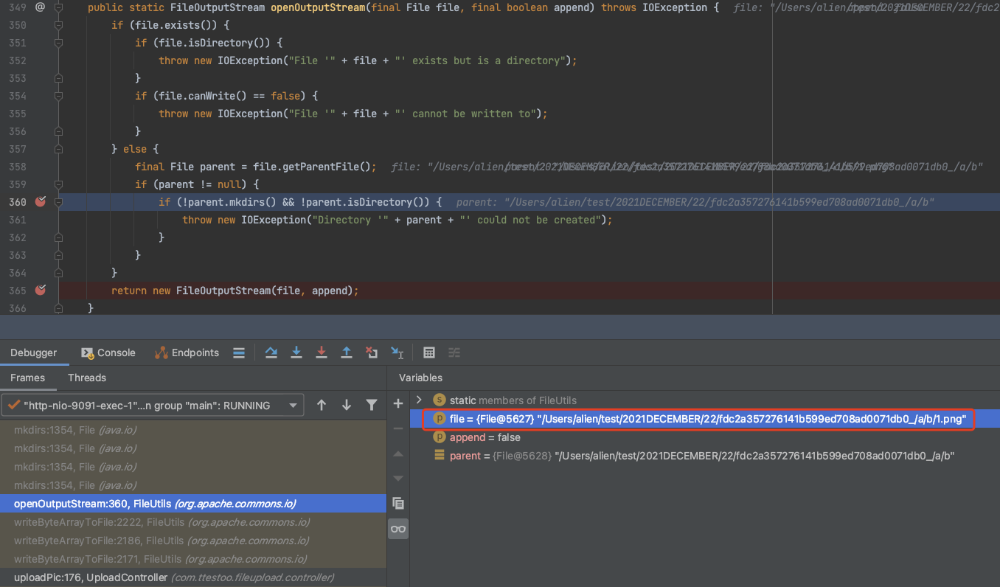
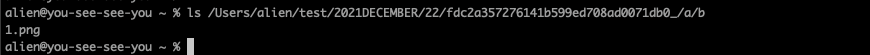
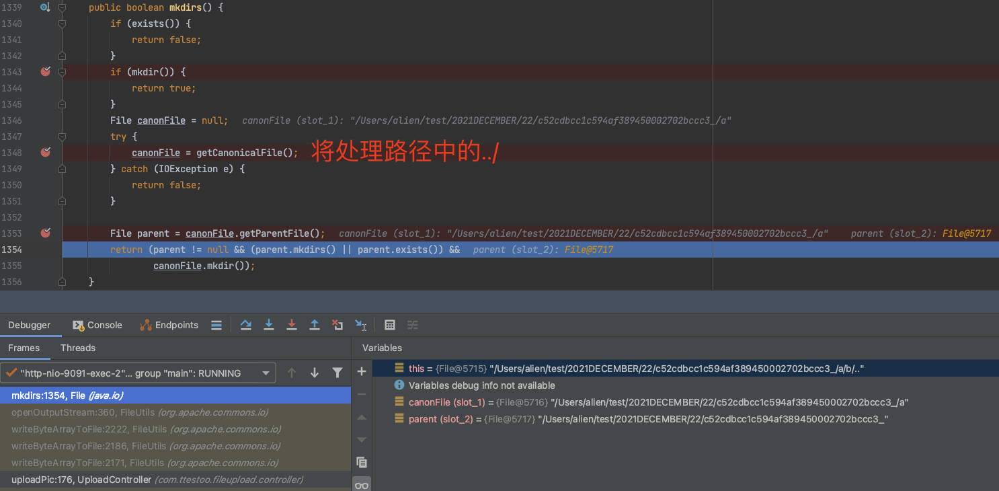
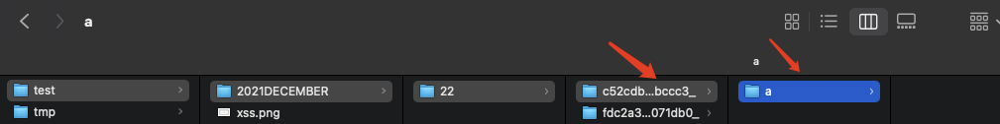
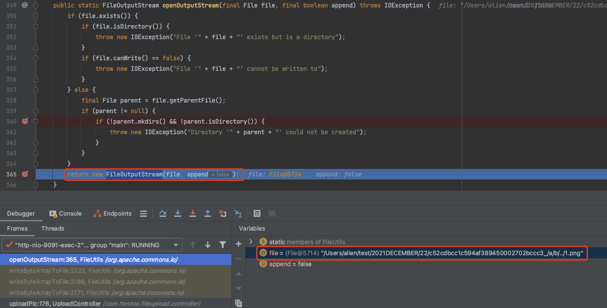
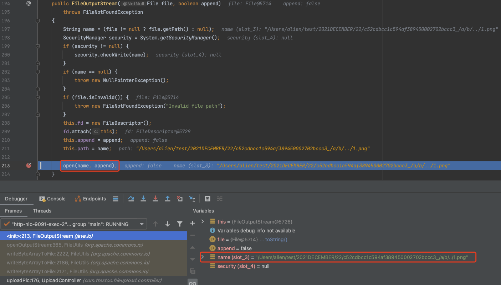
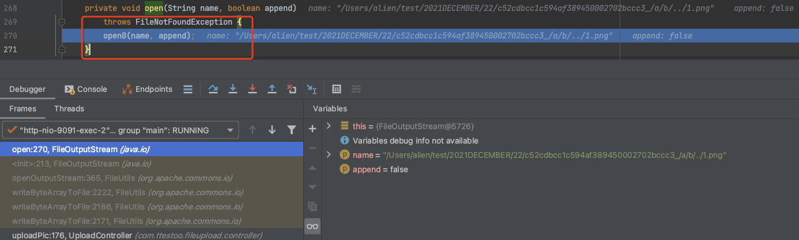
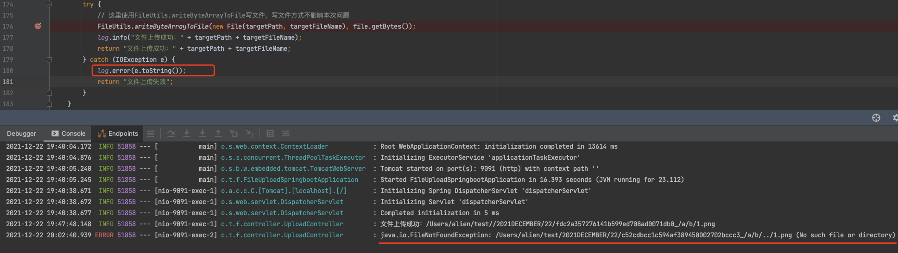

前言
业务中发现上传文件将随机值和原始文件名拼接后的结果作为保存的文件名，那么这种场景下是否可通过在文件名中加”/“进行路径穿越写文件呢？
简单分析
模拟文件名拼接场景下的文件上传代码如下：
1
2
3
4
5
6
7
8
9
10
11
12
13
14
15
16
17
18
19
20
21
22
23
24
25
26
27
28
29
30
31
| @PostMapping({"/upload9"})
@ResponseBody
public String uploadPic(@RequestParam MultipartFile file) {
if (file == null || file.isEmpty()) {
log.error("上传文件为空");
return "上传文件为空";
}
String fileName = file.getOriginalFilename();
String lowerCaseFileName = fileName.toLowerCase();
if (!lowerCaseFileName.endsWith(".jpg") && !lowerCaseFileName.endsWith(".png")) {
return "不支持的图片类型";
}
String targetFileName = UUID.randomUUID().toString().replaceAll("-", "") + "_" + fileName;
LocalDate now = LocalDate.now();
String middlePath = "" + now.getYear() + now.getMonth() + File.separator + now.getDayOfMonth() + File.separator;
String targetPath = path + File.separator + middlePath;
try {
FileUtils.writeByteArrayToFile(new File(targetPath, targetFileName), file.getBytes());
log.info("文件上传成功：" + targetPath + targetFileName);
return "文件上传成功：" + targetPath + targetFileName;
} catch (IOException e) {
log.error(e.toString());
return "文件上传失败";
}
}
|
1、当文件名为：/a/b/1.png 时，完整文件名为：/Users/alien/test/2021DECEMBER/22/fdc2a357276141b599ed708ad0071db0_/a/b/1.png

此时将创建所有文件路径并成功上传文件（可造成大量脏路径）：

2、当文件名中包含../时，例如为：/a/b/../1.png，则在java.io.File#mkdirs创建路径时将会处理../，并创建最终所需的路径：

注意这里不会创建被../抵消掉的路径，即不会创建/b路径：

创建路径之后，将会创建java.io.FileOutputStream实例化对象供下一步用来写数据，但是实例化FileOutputStream时，此时file对象为完整的文件路径：/Users/alien/test/2021DECEMBER/22/c52cdbcc1c594af389450002702bccc3_/a/b/../1.png


而对于java.io.FileOutputStream#open方法，会按照路径一步一步的寻找，当找到/b路径时将报错java.io.FileNotFoundException#FileNotFoundException：


结论
当随机值+原始文件名拼接的方式保存文件时，想要通过../进行路径穿越写文件是不成功的（这里我尝试了多种写文件的方式，最终都是通过java.io.File和java.io.FileOutputStream处理的）。
补充：
当文件名不包含随机值时，在文件上传时文件名中不能加不存在的路径然后../给抵消掉，只能存在的路径进行../，因为在java.io.File#isDirectory中判断时不存在路径会返回false，最终抛出IOException异常（不同写法可能不同，未验证）；